2022 National 5 Computing Science questions
Source: Scottish Qualifications Authority (SQA) / Qualifications Scotland. This is a StemInteract HTML companion, not an official HTML edition. Selectable text is supplied alongside original page images. Use the images or original PDF for equations, powers, fractions, vector notation, tables and diagrams; text extraction cannot fully preserve mathematical layout.
Jump to a question
PDF page 1
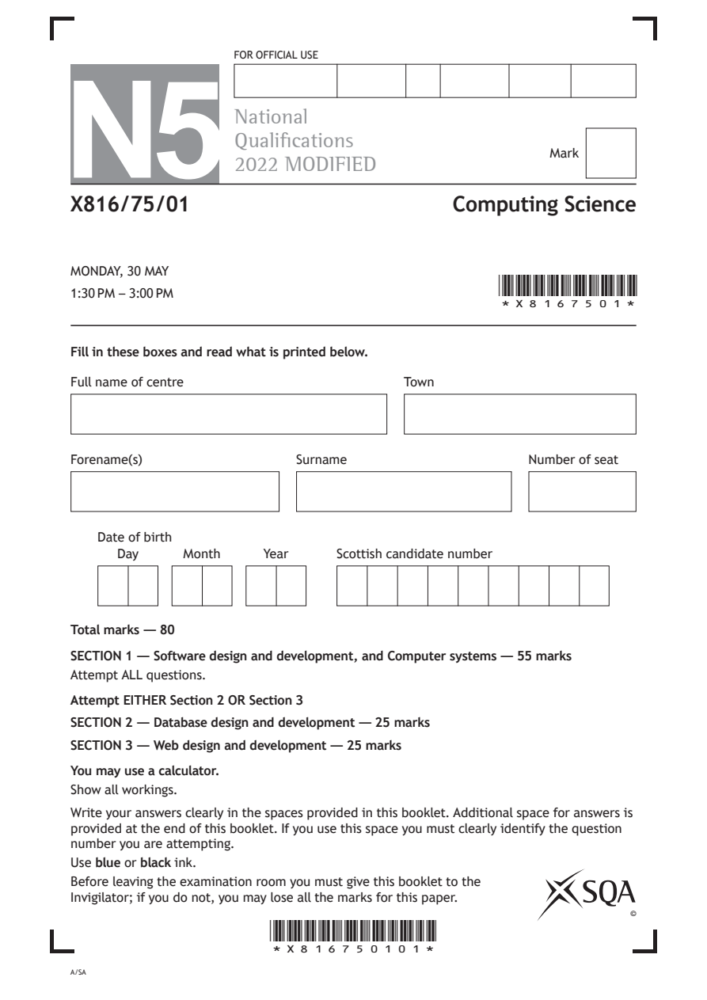
Selectable page text
FOR OFFICIAL USE
N5
National
Qualications
Mark
2022 MODIFIED
X816/75/01 Computing Science
MONDAY, 30 MAY
1:30 PM – 3:00 PM
*X8167501*
Fill in these boxes and read what is printed below.
Full name of centre Town
Forename(s) Surname Number of seat
Date of birth
Day Month Year Scottish candidate number
Total marks — 80
SECTION 1 — Software design and development, and Computer systems — 55 marks
Attempt ALL questions.
Attempt EITHER Section 2 OR Section 3
SECTION 2 — Database design and development — 25 marks
SECTION 3 — Web design and development — 25 marks
You may use a calculator.
Show all workings.
Write your answers clearly in the spaces provided in this booklet. Additional space for answers is
provided at the end of this booklet. If you use this space you must clearly identify the question
number you are attempting.
Use blue or black ink.
Before leaving the examination room you must give this booklet to the
Invigilator; if you do not, you may lose all the marks for this paper.
©
*X816750101*
A/SAPDF page 2
Question 1Question 2Question 3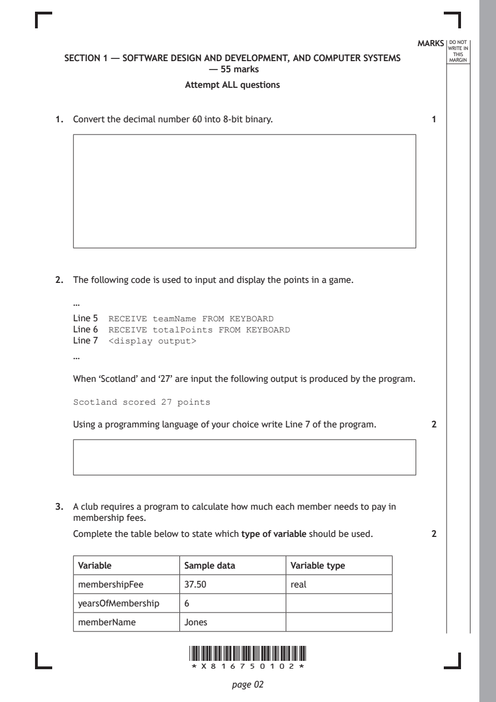
Selectable page text
MARKS DO NOT
WRITE IN
SECTION 1 — SOFTWARE DESIGN AND DEVELOPMENT, AND COMPUTER SYSTEMS THIS
MARGIN
— 55 marks
Attempt ALL questions
1. Convert the decimal number 60 into 8-bit binary. 1
2. The following code is used to input and display the points in a game.
…
Line 5
RECEIVE teamName FROM KEYBOARD
Line 6
RECEIVE totalPoints FROM KEYBOARD
Line 7
<display output>
…
When ‘Scotland’ and ‘27’ are input the following output is produced by the program.
Scotland scored 27 points
Using a programming language of your choice write Line 7 of the program. 2
3. A club requires a program to calculate how much each member needs to pay in
membership fees.
Complete the table below to state which type of variable should be used. 2
Variable Sample data Variable type
membershipFee 37.50 real
yearsOfMembership 6
memberName Jones
*X816750102*
page 02PDF page 3
Question 4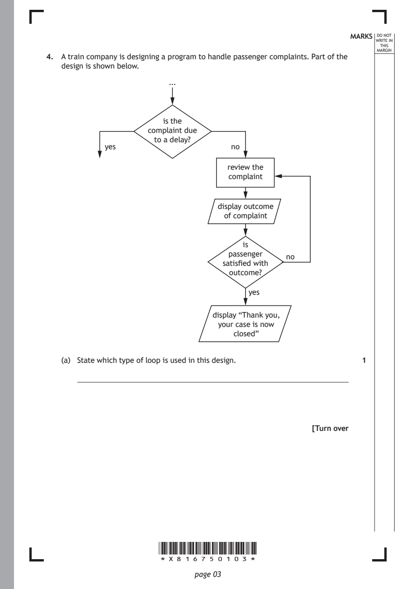
Selectable page text
MARKS DO NOT
WRITE IN
THIS
MARGIN
4. A train company is designing a program to handle passenger complaints. Part of the
design is shown below.
...
is the
complaint due
to a delay?
yes no
review the
complaint
display outcome
of complaint
is
passenger
no
satisfied with
outcome?
yes
display “Thank you,
your case is now
closed”
(a) State which type of loop is used in this design. 1
[Turn over
*X816750103*
page 03PDF page 4
Question 5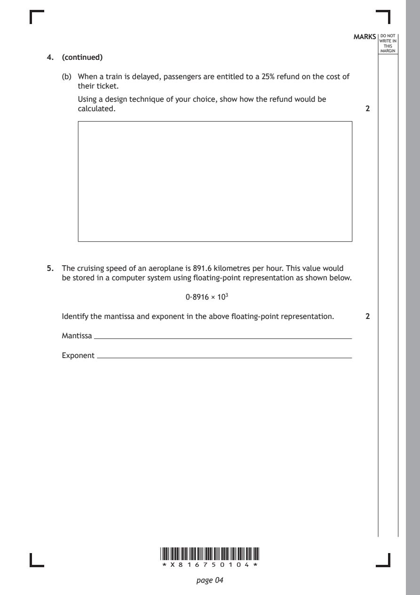
Selectable page text
MARKS DO NOT
WRITE IN
THIS
MARGIN
4. (continued)
(b) When a train is delayed, passengers are entitled to a 25% refund on the cost of
their ticket.
Using a design technique of your choice, show how the refund would be
calculated. 2
5. The cruising speed of an aeroplane is 891.6 kilometres per hour. This value would
be stored in a computer system using floating-point representation as shown below.
0·8916 × 103
Identify the mantissa and exponent in the above floating-point representation. 2
Mantissa
Exponent
*X816750104*
page 04PDF page 5
Question 6Question 7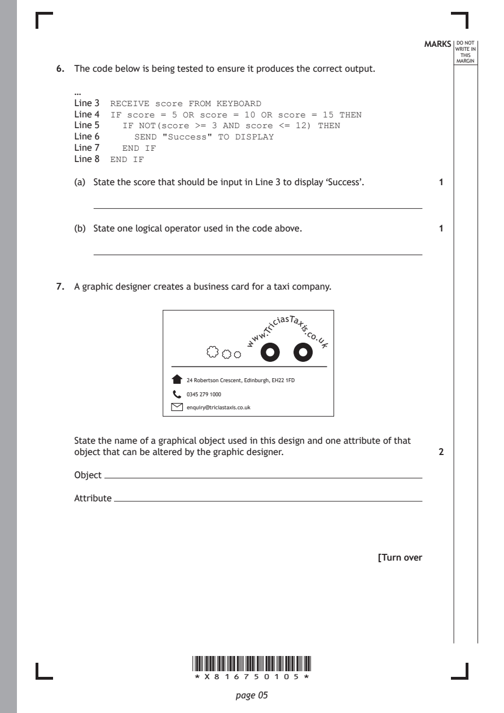
Selectable page text
MARKS DO NOT
WRITE IN
THIS
MARGIN
6. The code below is being tested to ensure it produces the correct output.
…
Line 3
RECEIVE score FROM KEYBOARD
Line 4
IF score = 5 OR score = 10 OR score = 15 THEN
Line 5
IF NOT(score >= 3 AND score <= 12) THEN
Line 6
SEND "Success" TO DISPLAY
Line 7
END IF
Line 8
END IF
(a) State the score that should be input in Line 3 to display ‘Success’. 1
(b) State one logical operator used in the code above. 1
7. A graphic designer creates a business card for a taxi company.
w
w.
Tr i
ciasTa
x is.co.u
w k
24 Robertson Crescent, Edinburgh, EH22 1FD
0345 279 1000
enquiry@triciastaxis.co.uk
State the name of a graphical object used in this design and one attribute of that
object that can be altered by the graphic designer. 2
Object
Attribute
[Turn over
*X816750105*
page 05PDF page 6
Question 8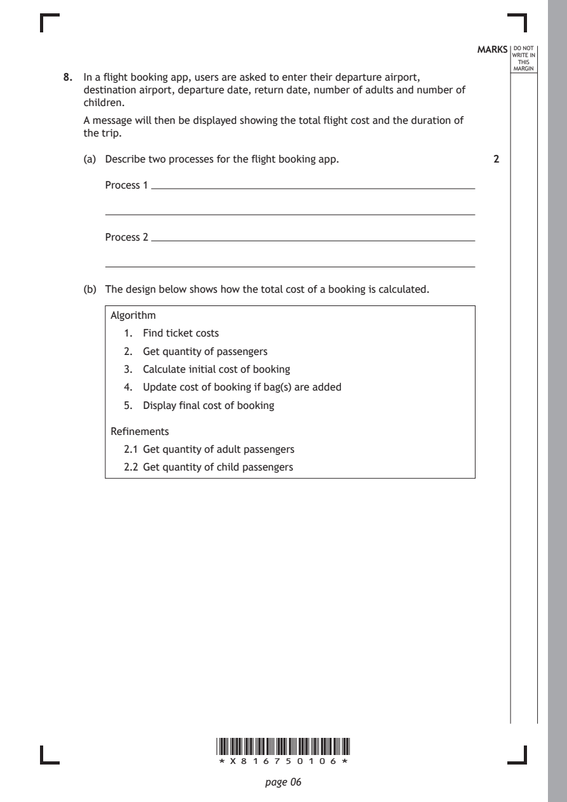
Selectable page text
MARKS DO NOT
WRITE IN
THIS
MARGIN
8. In a flight booking app, users are asked to enter their departure airport,
destination airport, departure date, return date, number of adults and number of
children.
A message will then be displayed showing the total flight cost and the duration of
the trip.
(a) Describe two processes for the flight booking app. 2
Process 1
Process 2
(b) The design below shows how the total cost of a booking is calculated.
Algorithm
1. Find ticket costs
2. Get quantity of passengers
3. Calculate initial cost of booking
4. Update cost of booking if bag(s) are added
5. Display final cost of booking
Refinements
2.1 Get quantity of adult passengers
2.2 Get quantity of child passengers
*X816750106*
page 06PDF page 7
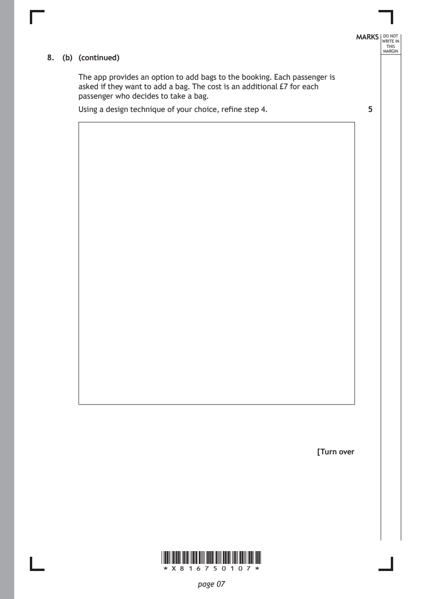
Selectable page text
MARKS DO NOT
WRITE IN
THIS
MARGIN
8. (b) (continued)
The app provides an option to add bags to the booking. Each passenger is
asked if they want to add a bag. The cost is an additional £7 for each
passenger who decides to take a bag.
Using a design technique of your choice, refine step 4. 5
[Turn over
*X816750107*
page 07PDF page 8
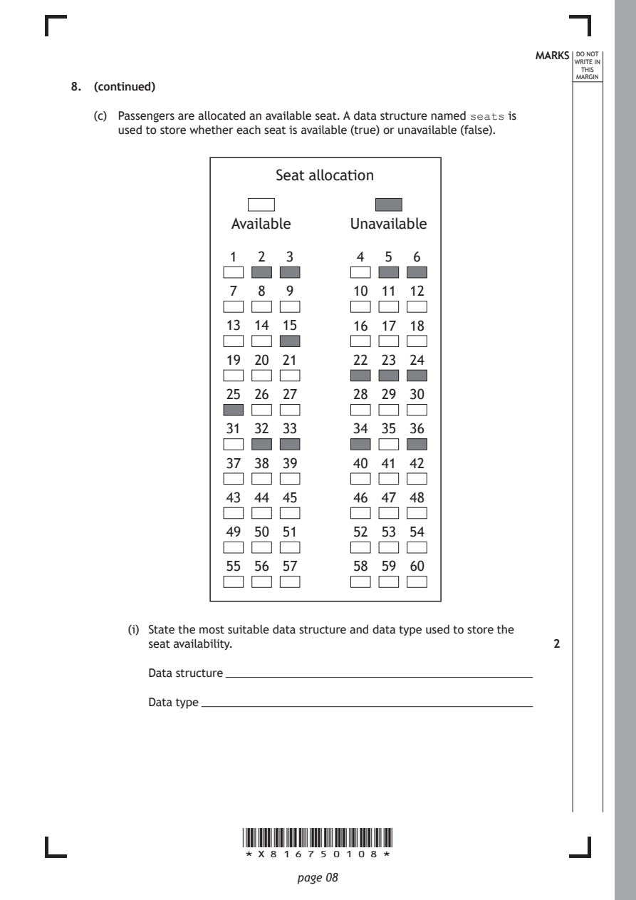
Selectable page text
MARKS DO NOT
WRITE IN
THIS
MARGIN
8. (continued)
(c) Passengers are allocated an available seat. A data structure named is
seats
used to store whether each seat is available (true) or unavailable (false).
Seat allocation
Available Unavailable
1 2 3 4 5 6
7 8 9 10 11 12
13 14 15 16 17 18
19 20 21 22 23 24
25 26 27 28 29 30
31 32 33 34 35 36
37 38 39 40 41 42
43 44 45 46 47 48
49 50 51 52 53 54
55 56 57 58 59 60
(i) State the most suitable data structure and data type used to store the
seat availability. 2
Data structure
Data type
*X816750108*
page 08PDF page 9
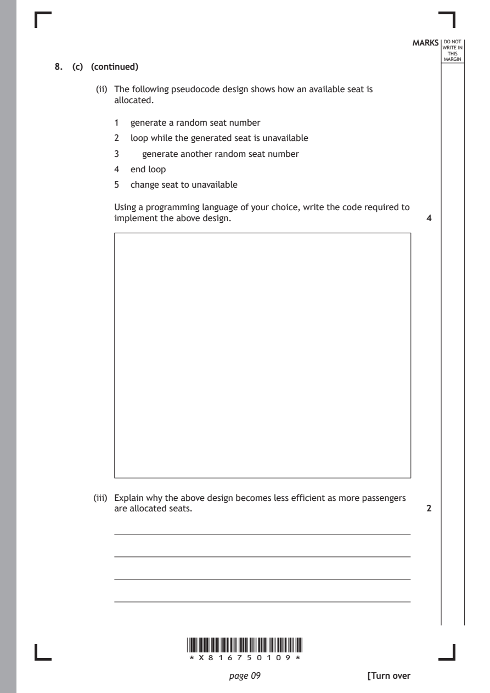
Selectable page text
MARKS DO NOT
WRITE IN
THIS
MARGIN
8. (c) (continued)
(ii) The following pseudocode design shows how an available seat is
allocated.
1 generate a random seat number
2 loop while the generated seat is unavailable
3 generate another random seat number
4 end loop
5 change seat to unavailable
Using a programming language of your choice, write the code required to
implement the above design. 4
(iii) Explain why the above design becomes less efficient as more passengers
are allocated seats. 2
*X816750109*
page 09 [Turn overPDF page 10
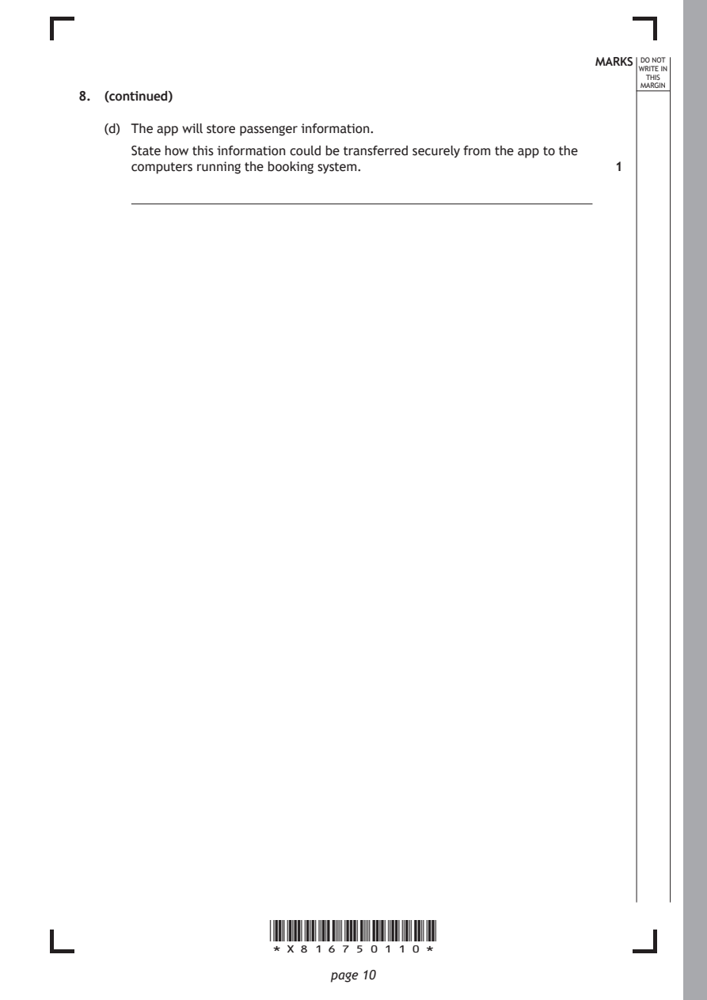
Selectable page text
MARKS DO NOT
WRITE IN
THIS
MARGIN
8. (continued)
(d) The app will store passenger information.
State how this information could be transferred securely from the app to the
computers running the booking system. 1
*X816750110*
page 10PDF page 11
Question 9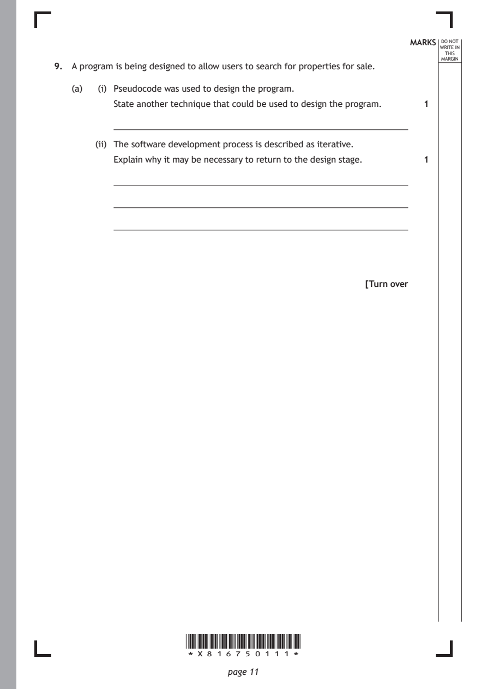
Selectable page text
MARKS DO NOT
WRITE IN
THIS
MARGIN
9. A program is being designed to allow users to search for properties for sale.
(a) (i) Pseudocode was used to design the program.
State another technique that could be used to design the program. 1
(ii) The software development process is described as iterative.
Explain why it may be necessary to return to the design stage. 1
[Turn over
*X816750111*
page 11PDF page 12
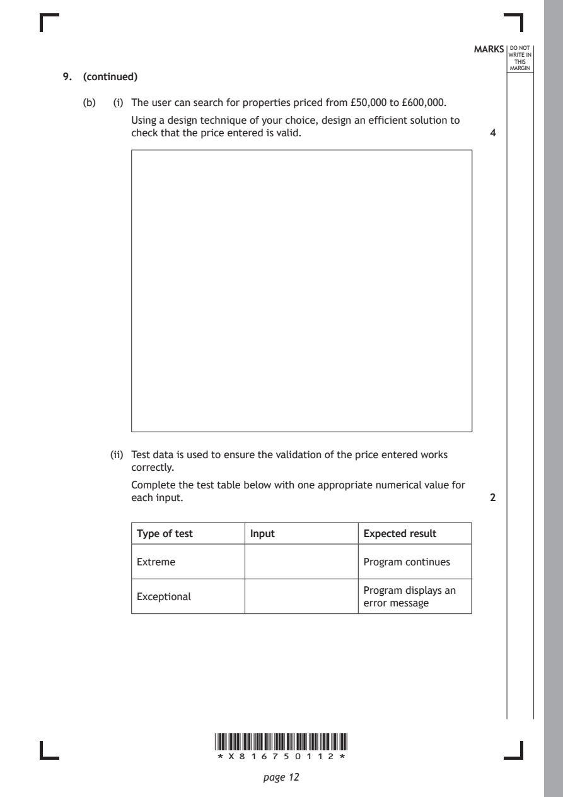
Selectable page text
MARKS DO NOT
WRITE IN
THIS
MARGIN
9. (continued)
(b) (i) The user can search for properties priced from £50,000 to £600,000.
Using a design technique of your choice, design an efficient solution to
check that the price entered is valid. 4
(ii) Test data is used to ensure the validation of the price entered works
correctly.
Complete the test table below with one appropriate numerical value for
each input. 2
Type of test Input Expected result
Extreme Program continues
Program displays an
Exceptional
error message
*X816750112*
page 12PDF page 13
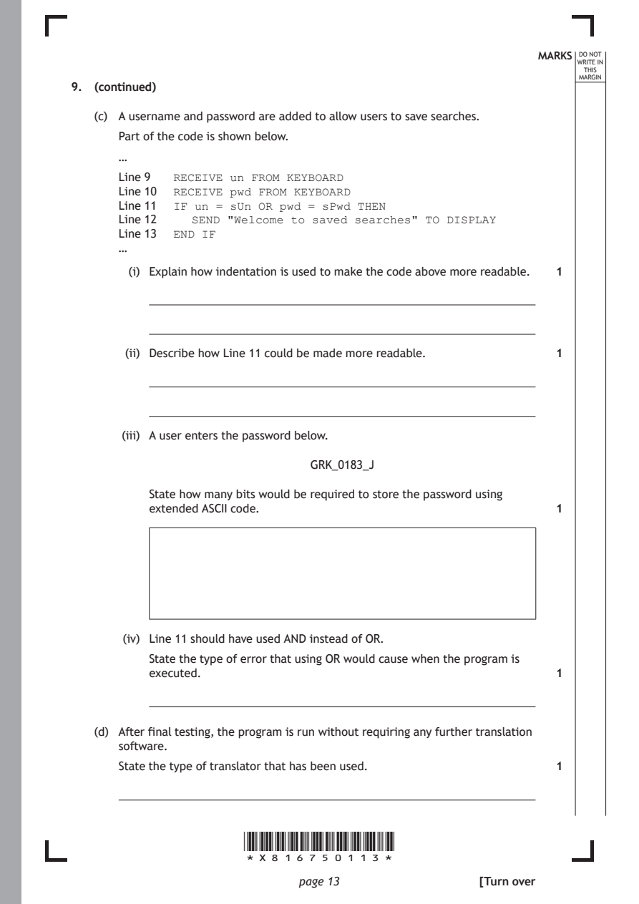
Selectable page text
MARKS DO NOT
WRITE IN
THIS
MARGIN
9. (continued)
(c) A username and password are added to allow users to save searches.
Part of the code is shown below.
…
Line 9
RECEIVE un FROM KEYBOARD
Line 10
RECEIVE pwd FROM KEYBOARD
Line 11
IF un = sUn OR pwd = sPwd THEN
Line 12
SEND "Welcome to saved searches" TO DISPLAY
Line 13
END IF
…
(i) Explain how indentation is used to make the code above more readable. 1
(ii) Describe how Line 11 could be made more readable. 1
(iii) A user enters the password below.
GRK_0183_J
State how many bits would be required to store the password using
extended ASCII code. 1
(iv) Line 11 should have used AND instead of OR.
State the type of error that using OR would cause when the program is
executed. 1
(d) After final testing, the program is run without requiring any further translation
software.
State the type of translator that has been used. 1
*X816750113*
page 13 [Turn overPDF page 14
Question 10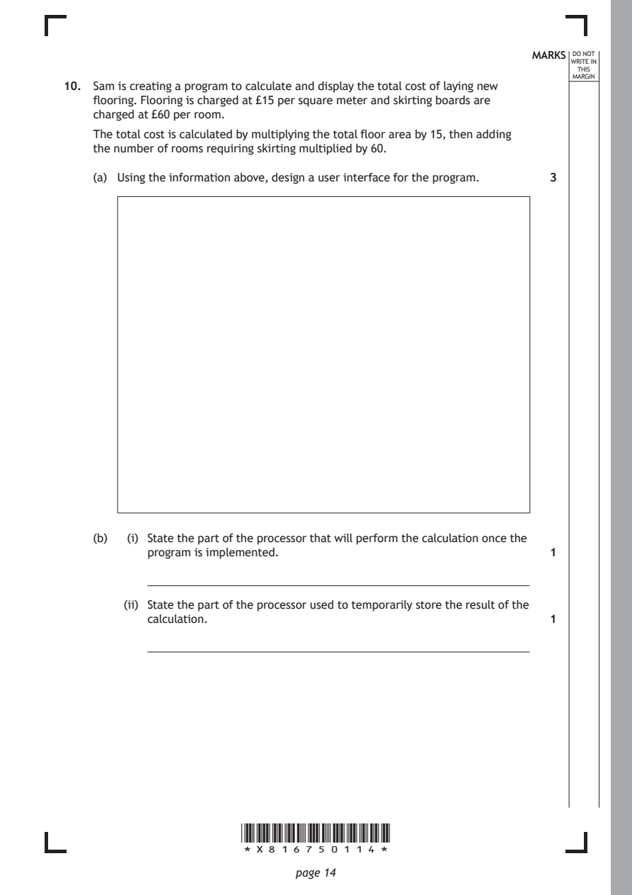
Selectable page text
MARKS DO NOT
WRITE IN
THIS
MARGIN
10. Sam is creating a program to calculate and display the total cost of laying new
flooring. Flooring is charged at £15 per square meter and skirting boards are
charged at £60 per room.
The total cost is calculated by multiplying the total floor area by 15, then adding
the number of rooms requiring skirting multiplied by 60.
(a) Using the information above, design a user interface for the program. 3
(b) (i) State the part of the processor that will perform the calculation once the
program is implemented. 1
(ii) State the part of the processor used to temporarily store the result of the
calculation. 1
*X816750114*
page 14PDF page 15
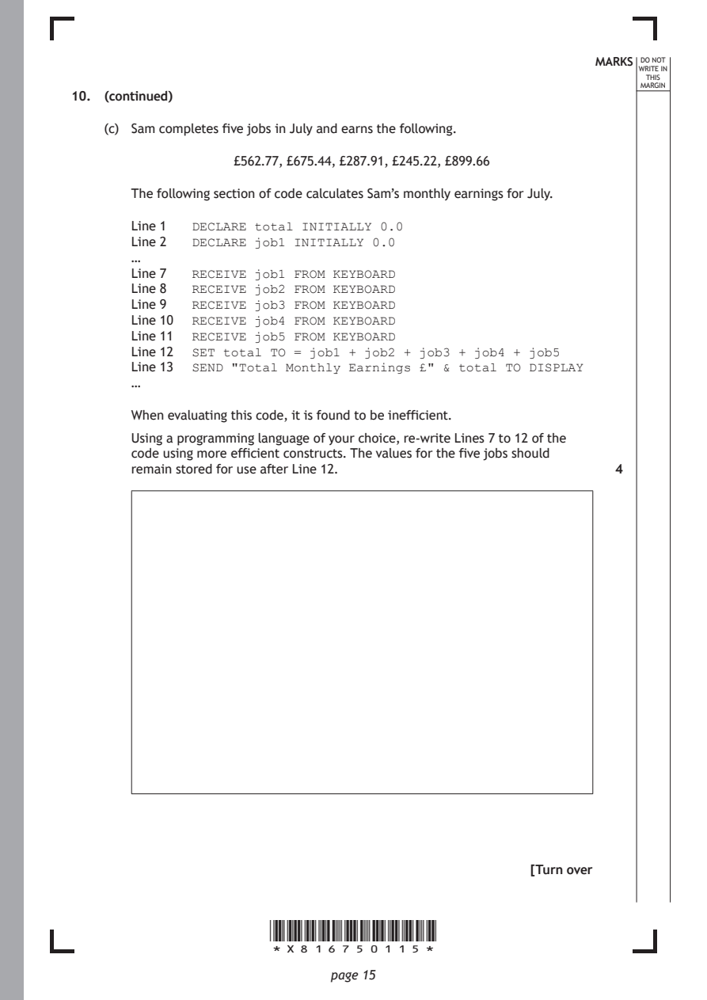
Selectable page text
MARKS DO NOT
WRITE IN
THIS
MARGIN
10. (continued)
(c) Sam completes five jobs in July and earns the following.
£562.77, £675.44, £287.91, £245.22, £899.66
The following section of code calculates Sam’s monthly earnings for July.
Line 1
DECLARE total INITIALLY 0.0
Line 2
DECLARE job1 INITIALLY 0.0
…
Line 7
RECEIVE job1 FROM KEYBOARD
Line 8
RECEIVE job2 FROM KEYBOARD
Line 9
RECEIVE job3 FROM KEYBOARD
Line 10
RECEIVE job4 FROM KEYBOARD
Line 11
RECEIVE job5 FROM KEYBOARD
Line 12
SET total TO = job1 + job2 + job3 + job4 + job5
Line 13
SEND "Total Monthly Earnings £" & total TO DISPLAY
…
When evaluating this code, it is found to be inefficient.
Using a programming language of your choice, re-write Lines 7 to 12 of the
code using more efficient constructs. The values for the five jobs should
remain stored for use after Line 12. 4
[Turn over
*X816750115*
page 15PDF page 16
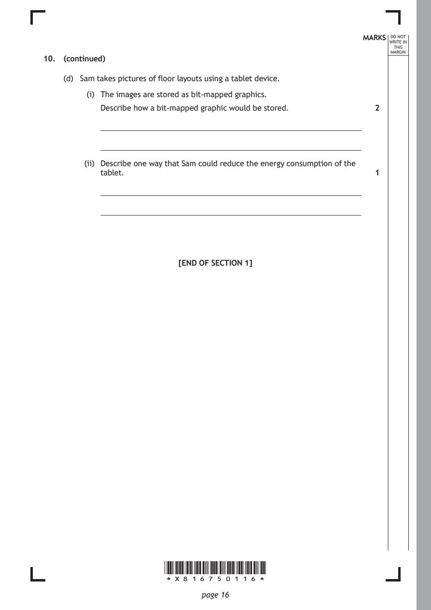
Selectable page text
MARKS DO NOT
WRITE IN
THIS
MARGIN
10. (continued)
(d) Sam takes pictures of floor layouts using a tablet device.
(i) The images are stored as bit-mapped graphics.
Describe how a bit-mapped graphic would be stored. 2
(ii) Describe one way that Sam could reduce the energy consumption of the
tablet. 1
[END OF SECTION 1]
*X816750116*
page 16PDF page 17
Question 11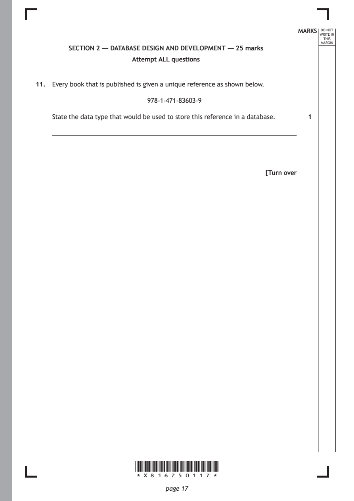
Selectable page text
MARKS DO NOT
WRITE IN
THIS
MARGIN
SECTION 2 — DATABASE DESIGN AND DEVELOPMENT — 25 marks
Attempt ALL questions
11. Every book that is published is given a unique reference as shown below.
978-1-471-83603-9
State the data type that would be used to store this reference in a database. 1
[Turn over
*X816750117*
page 17PDF page 18
Question 12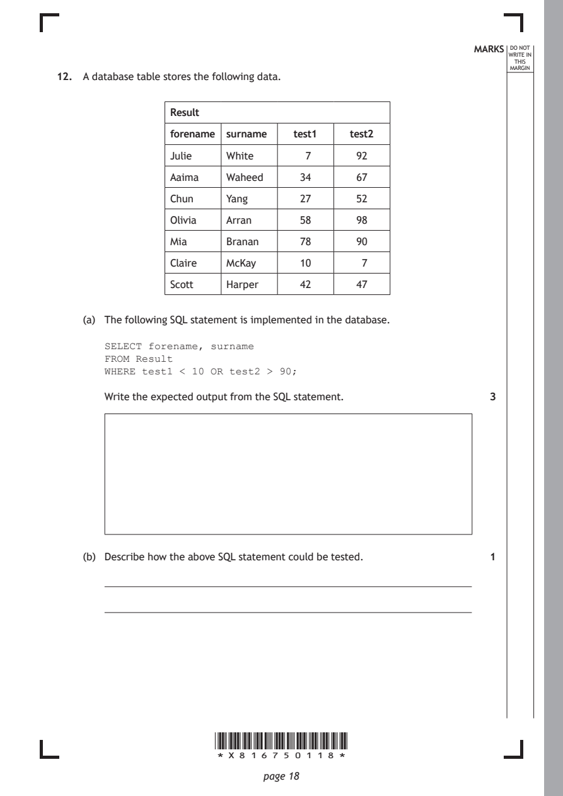
Selectable page text
MARKS DO NOT
WRITE IN
THIS
MARGIN
12. A database table stores the following data.
Result
forename surname test1 test2
Julie White 7 92
Aaima Waheed 34 67
Chun Yang 27 52
Olivia Arran 58 98
Mia Branan 78 90
Claire McKay 10 7
Scott Harper 42 47
(a) The following SQL statement is implemented in the database.
SELECT forename, surname
FROM Result
WHERE test1 < 10 OR test2 > 90;
Write the expected output from the SQL statement. 3
(b) Describe how the above SQL statement could be tested. 1
*X816750118*
page 18PDF page 19
Question 13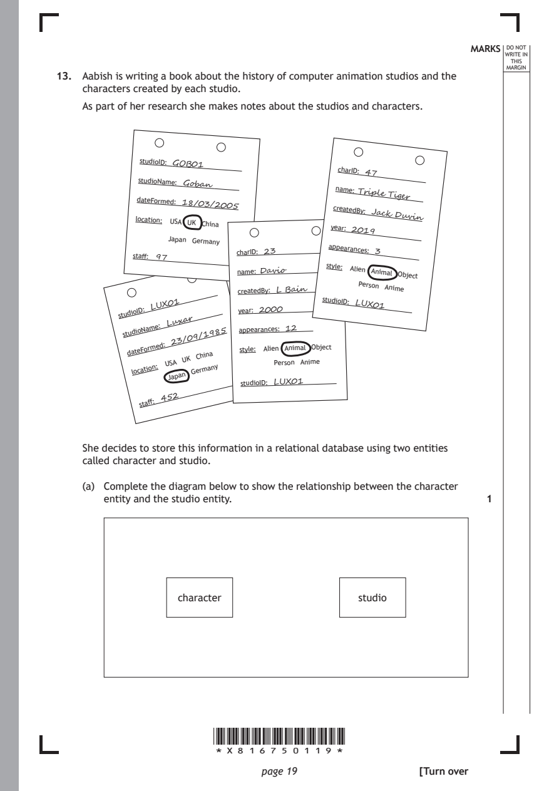
Selectable page text
MARKS DO NOT
WRITE IN
THIS
MARGIN
13. Aabish is writing a book about the history of computer animation studios and the
characters created by each studio.
As part of her research she makes notes about the studios and characters.
l d o s
s
a t c
t
u a t
u
e d t
d
i F i o
i
o o
o
n N r
I
:
D
m a
:
m e
J
U d e
a
G
: S :
p
A
a
O
1
n
G
B
U 8 o
0
K
G
/ b
e
1
0 a
r
C
m
3 n h
a
i / n
n
2 a
y
0 0 5 y c e n r a
c
e a
h
r a m :
a
t
r
e e
I
2 : d
D
B 0
:
T y 1 r :
4
i 9
7
J p a l e c k T i D g e u r v i n
staff: 97
c
n
h
a
a
m
rI
e
D
:
:
D
2
a
3
v i o s
a
t y
p
l
p
e
e
:
a r a
A
n
li
c
e
e
n
s :
A
3
ni m a l O b j e c t
st
s
u
t d
d
u a
i
l d
o
o t i
I
e c o
D
s
a F N
t
:
o t
a
a i r
ff
o m m
L
n
:
e : e
U
: d
4
X
: U L
5
J
0
S a 2 u A
2
1
p 3 x a n U / a K 0 r G 9 e C / r h m 1 i n a 9 a n y 8 5
c
y
a s
s
r
e
t p
t
e
y
a
u
p
a
l
r
d
e e
t
:
e
i
: a
o
d
r
2
I
a
B
D
A n
y
0
:
l c
:
i
0
e e
L
P s n
L
0
: e
U
r s A
B
1
X
o n n
a
2
0
i m
i
1
n
a A l n i m O e b j e
s t
c
u
t
d ioID : L
P
U
er
X
so
0
n
1
A n i m e
She decides to store this information in a relational database using two entities
called character and studio.
(a) Complete the diagram below to show the relationship between the character
entity and the studio entity. 1
character studio
*X816750119*
page 19 [Turn overPDF page 20
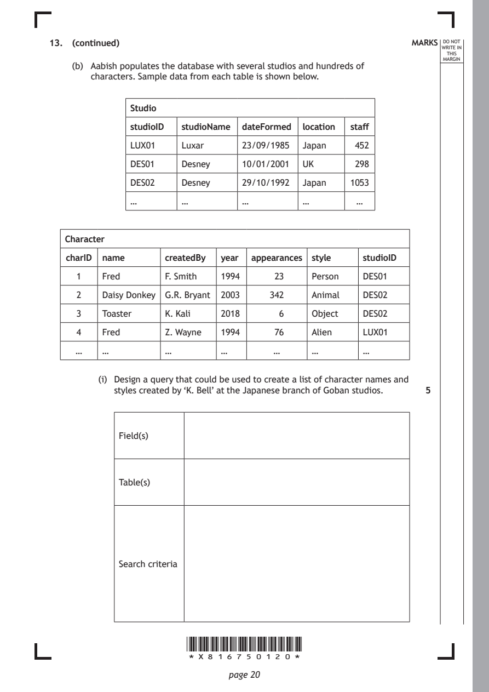
Selectable page text
13. (continued) MARKS DO NOT
WRITE IN
THIS
MARGIN
(b) Aabish populates the database with several studios and hundreds of
characters. Sample data from each table is shown below.
Studio
studioID studioName dateFormed location staff
LUX01 Luxar 23/09/1985 Japan 452
DES01 Desney 10/01/2001 UK 298
DES02 Desney 29/10/1992 Japan 1053
… … … … …
Character
charID name createdBy year appearances style studioID
1 Fred F. Smith 1994 23 Person DES01
2 Daisy Donkey G.R. Bryant 2003 342 Animal DES02
3 Toaster K. Kali 2018 6 Object DES02
4 Fred Z. Wayne 1994 76 Alien LUX01
… … … … … … …
(i) Design a query that could be used to create a list of character names and
styles created by ‘K. Bell’ at the Japanese branch of Goban studios. 5
Field(s)
Table(s)
Search criteria
*X816750120*
page 20PDF page 21
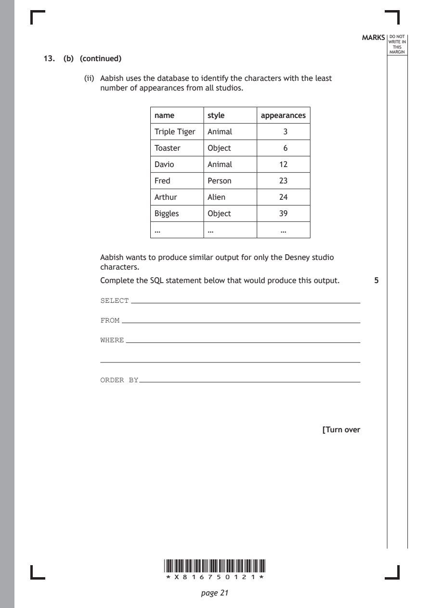
Selectable page text
MARKS DO NOT
WRITE IN
THIS
MARGIN
13. (b) (continued)
(ii) Aabish uses the database to identify the characters with the least
number of appearances from all studios.
name style appearances
Triple Tiger Animal 3
Toaster Object 6
Davio Animal 12
Fred Person 23
Arthur Alien 24
Biggles Object 39
… … …
Aabish wants to produce similar output for only the Desney studio
characters.
Complete the SQL statement below that would produce this output. 5
SELECT
FROM
WHERE
ORDER BY
[Turn over
*X816750121*
page 21PDF page 22

Selectable page text
[BLANK PAGE]
DO NOT WRITE ON THIS PAGE
*X816750122*
page 22PDF page 23
Question 14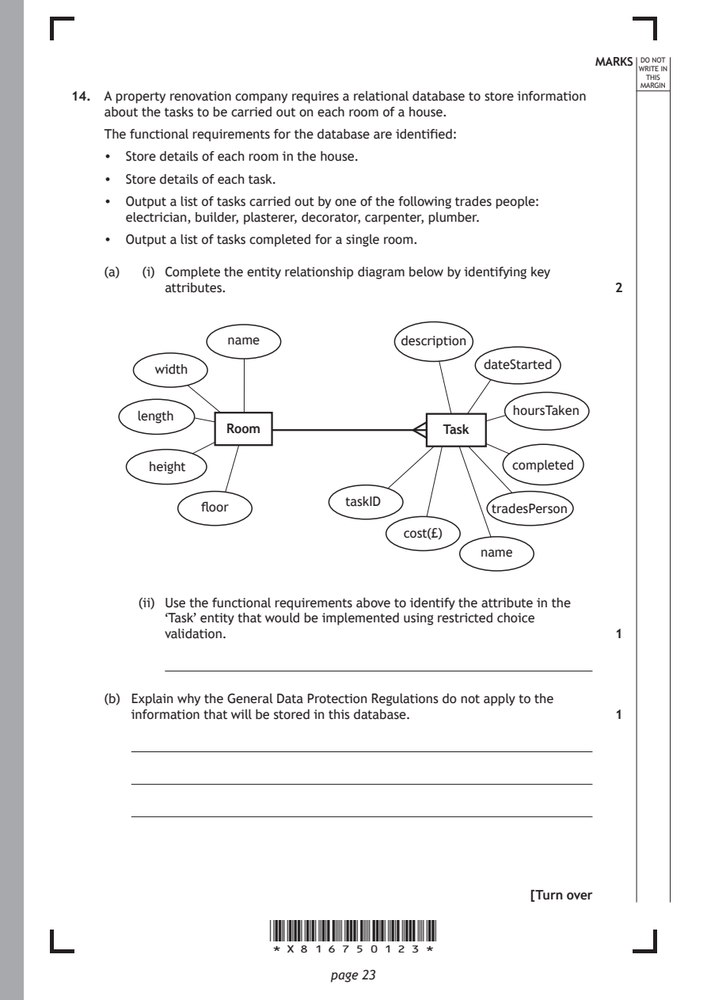
Selectable page text
MARKS DO NOT
WRITE IN
THIS
MARGIN
14. A property renovation company requires a relational database to store information
about the tasks to be carried out on each room of a house.
The functional requirements for the database are identified:
• Store details of each room in the house.
• Store details of each task.
• Output a list of tasks carried out by one of the following trades people:
electrician, builder, plasterer, decorator, carpenter, plumber.
• Output a list of tasks completed for a single room.
(a) (i) Complete the entity relationship diagram below by identifying key
attributes. 2
name description
dateStarted
width
hoursTaken
length
Room Task
height completed
taskID
floor tradesPerson
cost(£)
name
(ii) Use the functional requirements above to identify the attribute in the
‘Task’ entity that would be implemented using restricted choice
validation. 1
(b) Explain why the General Data Protection Regulations do not apply to the
information that will be stored in this database. 1
[Turn over
*X816750123*
page 23PDF page 24
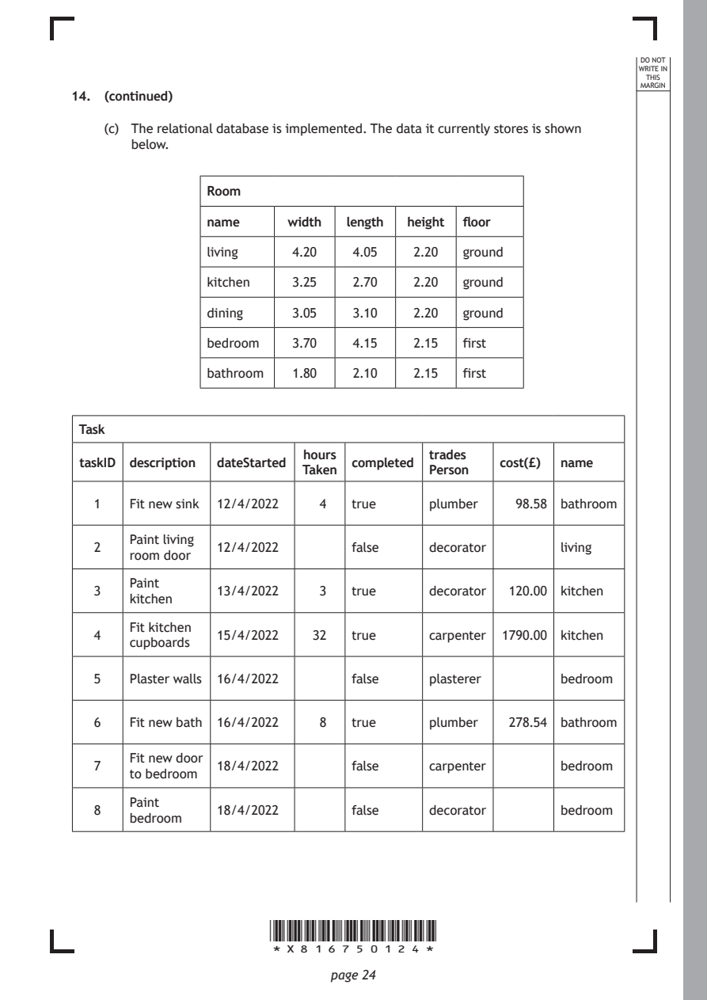
Selectable page text
DO NOT
WRITE IN
THIS
MARGIN
14. (continued)
(c) The relational database is implemented. The data it currently stores is shown
below.
Room
name width length height floor
living 4.20 4.05 2.20 ground
kitchen 3.25 2.70 2.20 ground
dining 3.05 3.10 2.20 ground
bedroom 3.70 4.15 2.15 first
bathroom 1.80 2.10 2.15 first
Task
hours trades
taskID description dateStarted completed cost(£) name
Taken Person
1 Fit new sink 12/4/2022 4 true plumber 98.58 bathroom
Paint living
2 12/4/2022 false decorator living
room door
Paint
3 13/4/2022 3 true decorator 120.00 kitchen
kitchen
Fit kitchen
4 15/4/2022 32 true carpenter 1790.00 kitchen
cupboards
5 Plaster walls 16/4/2022 false plasterer bedroom
6 Fit new bath 16/4/2022 8 true plumber 278.54 bathroom
Fit new door
7 18/4/2022 false carpenter bedroom
to bedroom
Paint
8 18/4/2022 false decorator bedroom
bedroom
*X816750124*
page 24PDF page 25
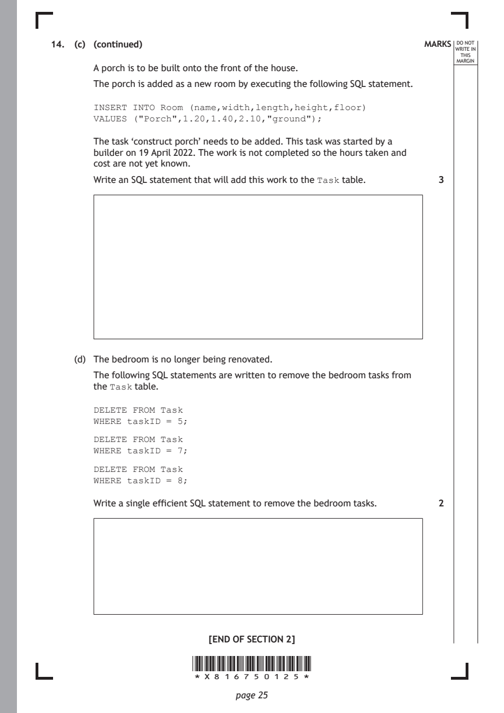
Selectable page text
14. (c) (continued) MARKS DO NOT
WRITE IN
THIS
MARGIN
A porch is to be built onto the front of the house.
The porch is added as a new room by executing the following SQL statement.
INSERT INTO Room (name,width,length,height,floor)
VALUES ("Porch",1.20,1.40,2.10,"ground");
The task ‘construct porch’ needs to be added. This task was started by a
builder on 19 April 2022. The work is not completed so the hours taken and
cost are not yet known.
Write an SQL statement that will add this work to the table. 3
Task
(d) The bedroom is no longer being renovated.
The following SQL statements are written to remove the bedroom tasks from
the table.
Task
DELETE FROM Task
WHERE taskID = 5;
DELETE FROM Task
WHERE taskID = 7;
DELETE FROM Task
WHERE taskID = 8;
Write a single efficient SQL statement to remove the bedroom tasks. 2
[END OF SECTION 2]
*X816750125*
page 25PDF page 26
Question 15Question 16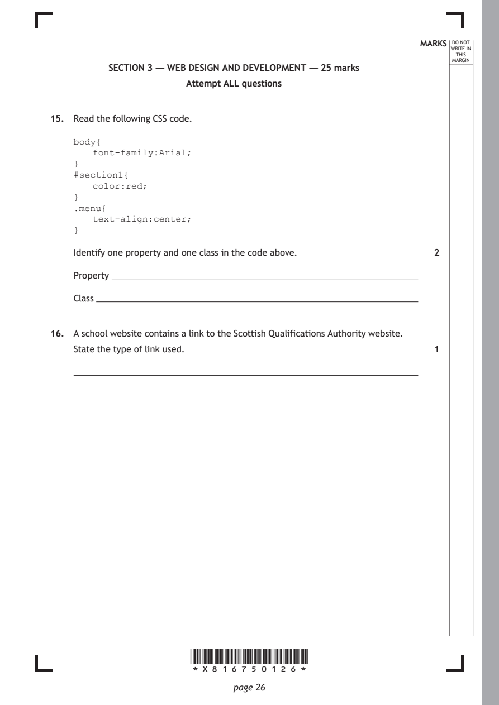
Selectable page text
MARKS DO NOT
WRITE IN
THIS
MARGIN
SECTION 3 — WEB DESIGN AND DEVELOPMENT — 25 marks
Attempt ALL questions
15. Read the following CSS code.
body{
font-family:Arial;
}
#section1{
color:red;
}
.menu{
text-align:center;
}
Identify one property and one class in the code above. 2
Property
Class
16. A school website contains a link to the Scottish Qualifications Authority website.
State the type of link used. 1
*X816750126*
page 26PDF page 27
Question 17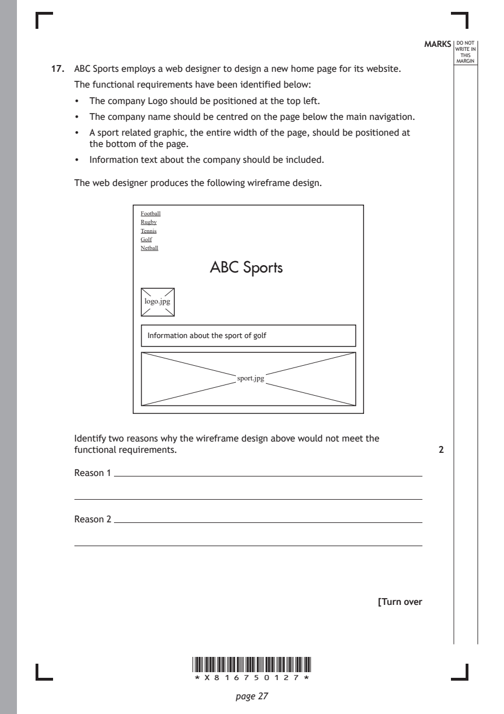
Selectable page text
MARKS DO NOT
WRITE IN
THIS
MARGIN
17. ABC Sports employs a web designer to design a new home page for its website.
The functional requirements have been identified below:
• The company Logo should be positioned at the top left.
• The company name should be centred on the page below the main navigation.
• A sport related graphic, the entire width of the page, should be positioned at
the bottom of the page.
• Information text about the company should be included.
The web designer produces the following wireframe design.
Football
Rugby
Tennis
Golf
Netball
ABC Sports
logo.jpg
Information about the sport of golf
sport.jpg
Identify two reasons why the wireframe design above would not meet the
functional requirements. 2
Reason 1
Reason 2
[Turn over
*X816750127*
page 27PDF page 28
Question 18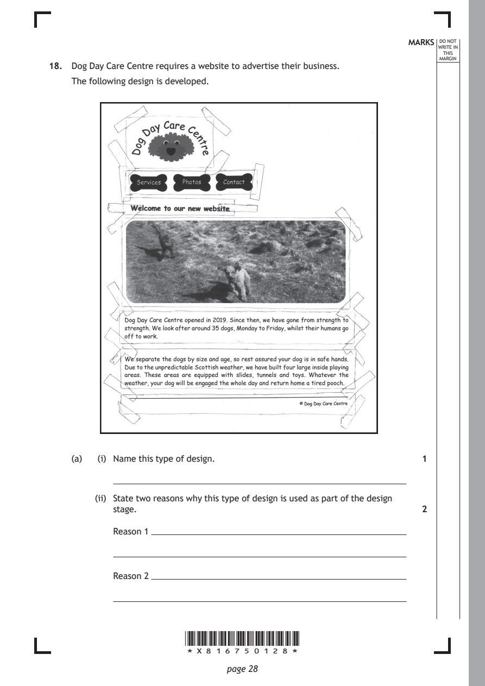
Selectable page text
MARKS DO NOT
WRITE IN
THIS
MARGIN
18. Dog Day Care Centre requires a website to advertise their business.
The following design is developed.
Dog Day Care Centre opened in 2019. Since then, we have gone from strength to
strength. We look after around 35 dogs, Monday to Friday, whilst their humans go
off to work.
We separate the dogs by size and age, so rest assured your dog is in safe hands.
Due to the unpredictable Scottish weather, we have built four large inside playing
areas. These areas are equipped with slides, tunnels and toys. Whatever the
weather, your dog will be engaged the whole day and return home a tired pooch.
(a) (i) Name this type of design. 1
(ii) State two reasons why this type of design is used as part of the design
stage. 2
Reason 1
Reason 2
*X816750128*
page 28PDF page 29
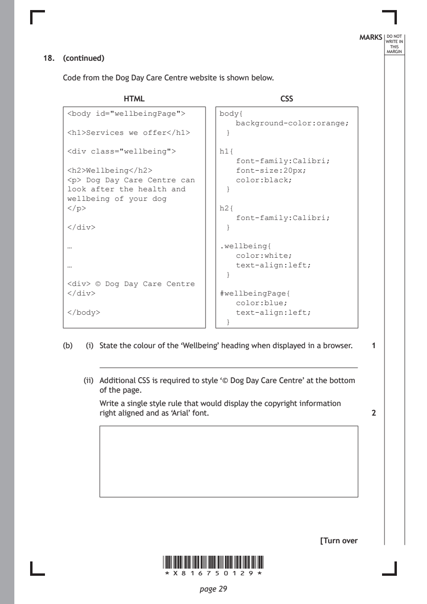
Selectable page text
MARKS DO NOT
WRITE IN
THIS
MARGIN
18. (continued)
Code from the Dog Day Care Centre website is shown below.
HTML CSS
<body id="wellbeingPage"> body{
background-color:orange;
<h1>Services we offer</h1> }
<div class="wellbeing"> h1{
font-family:Calibri;
<h2>Wellbeing</h2> font-size:20px;
<p> Dog Day Care Centre can color:black;
look after the health and }
wellbeing of your dog
</p> h2{
font-family:Calibri;
</div> }
… .wellbeing{
color:white;
… text-align:left;
}
<div> © Dog Day Care Centre
</div> #wellbeingPage{
color:blue;
</body> text-align:left;
}
(b) (i) State the colour of the ‘Wellbeing’ heading when displayed in a browser. 1
(ii) Additional CSS is required to style ‘© Dog Day Care Centre’ at the bottom
of the page.
Write a single style rule that would display the copyright information
right aligned and as ‘Arial’ font. 2
[Turn over
*X816750129*
page 29PDF page 30
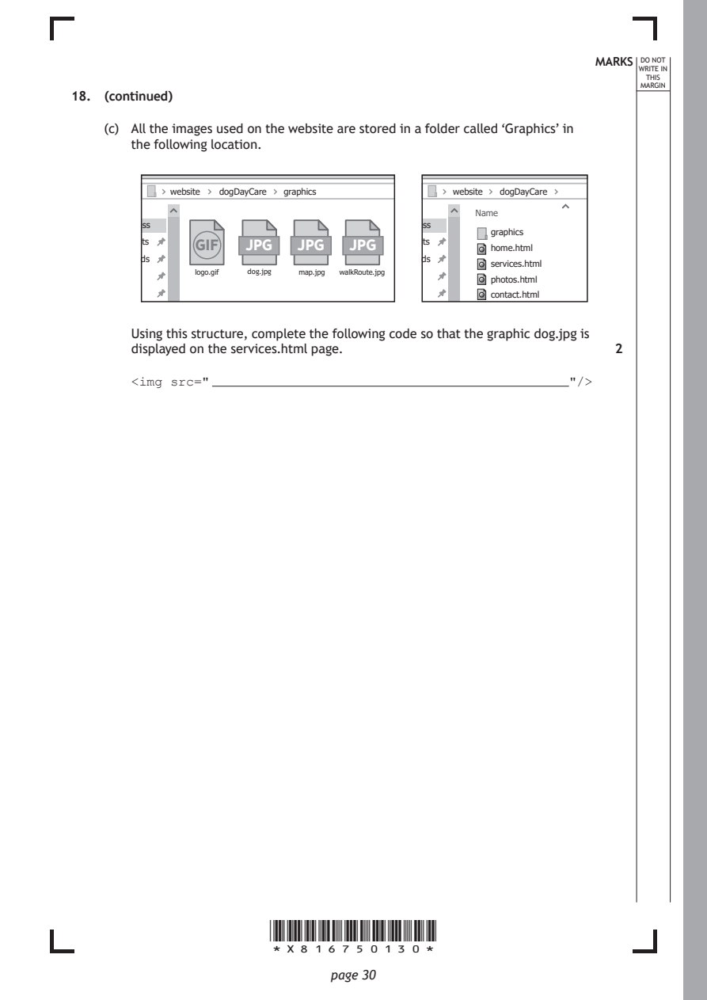
Selectable page text
MARKS DO NOT
WRITE IN
THIS
MARGIN
18. (continued)
(c) All the images used on the website are stored in a folder called ‘Graphics’ in
the following location.
website dogDayCare graphics website dogDayCare
Name
ss ss
graphics
ts GIF JPG JPG JPG ts
home.html
ds ds
services.html
logo.gif dog.jpg map.jpg walkRoute.jpg
photos.html
contact.html
Using this structure, complete the following code so that the graphic dog.jpg is
displayed on the services.html page. 2
<img src=" "/>
*X816750130*
page 30PDF page 31
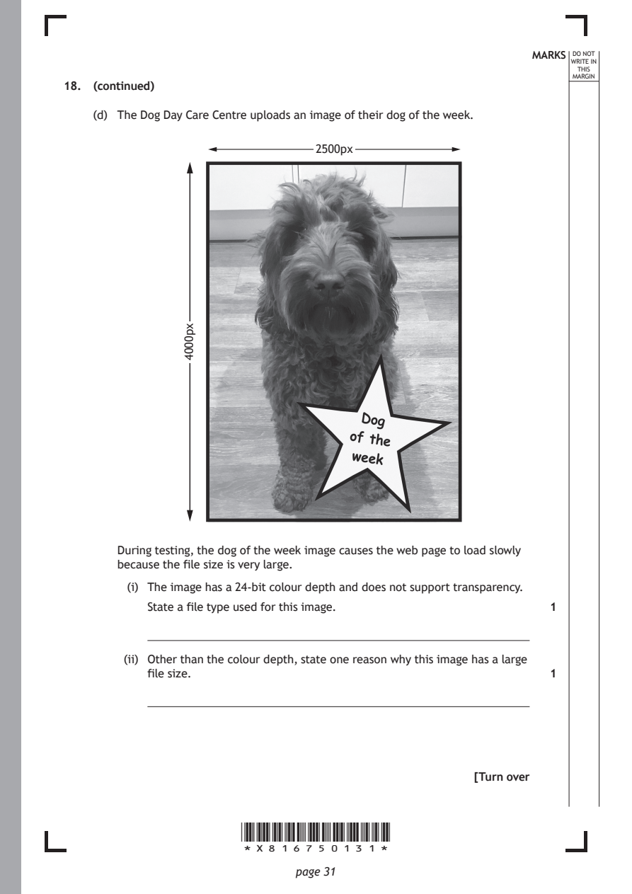
Selectable page text
MARKS DO NOT
WRITE IN
THIS
MARGIN
18. (continued)
(d) The Dog Day Care Centre uploads an image of their dog of the week.
*X816750131*
page 31
xp0004
2500px
During testing, the dog of the week image causes the web page to load slowly
because the file size is very large.
(i) The image has a 24-bit colour depth and does not support transparency.
State a file type used for this image. 1
(ii) Other than the colour depth, state one reason why this image has a large
file size. 1
[Turn overPDF page 32
Question 19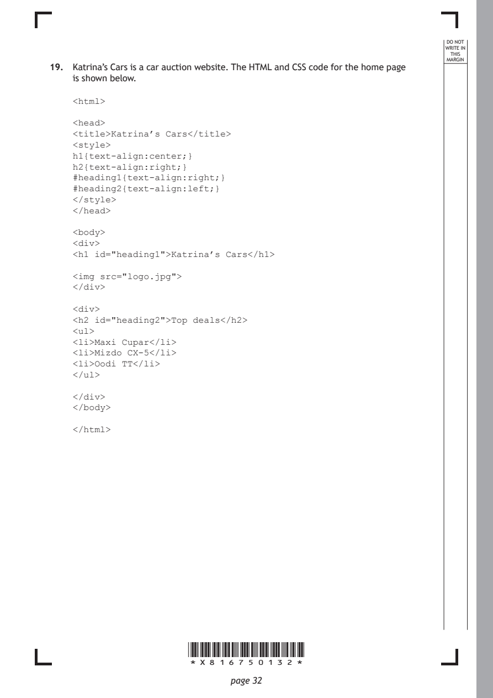
Selectable page text
DO NOT
WRITE IN
THIS
MARGIN
19. Katrina’s Cars is a car auction website. The HTML and CSS code for the home page
is shown below.
<html>
<head>
<title>Katrina’s Cars</title>
<style>
h1{text-align:center;}
h2{text-align:right;}
#heading1{text-align:right;}
#heading2{text-align:left;}
</style>
</head>
<body>
<div>
<h1 id="heading1">Katrina’s Cars</h1>
<img src="logo.jpg">
</div>
<div>
<h2 id="heading2">Top deals</h2>
<ul>
<li>Maxi Cupar</li>
<li>Mizdo CX-5</li>
<li>Oodi TT</li>
</ul>
</div>
</body>
</html>
*X816750132*
page 32PDF page 33
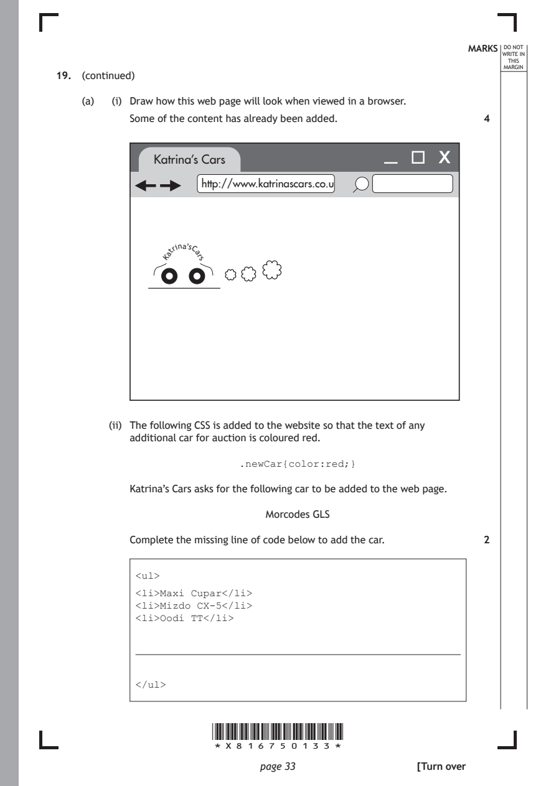
Selectable page text
MARKS DO NOT
WRITE IN
THIS
MARGIN
19. (continued)
(a) (i) Draw how this web page will look when viewed in a browser.
Some of the content has already been added. 4
Katrina’s Cars
http://www.katrinascars.co.u
K a
trina’sC
a rs
(ii) The following CSS is added to the website so that the text of any
additional car for auction is coloured red.
.newCar{color:red;}
Katrina’s Cars asks for the following car to be added to the web page.
Morcodes GLS
Complete the missing line of code below to add the car. 2
<ul>
<li>Maxi Cupar</li>
<li>Mizdo CX-5</li>
<li>Oodi TT</li>
</ul>
*X816750133*
page 33 [Turn overPDF page 34
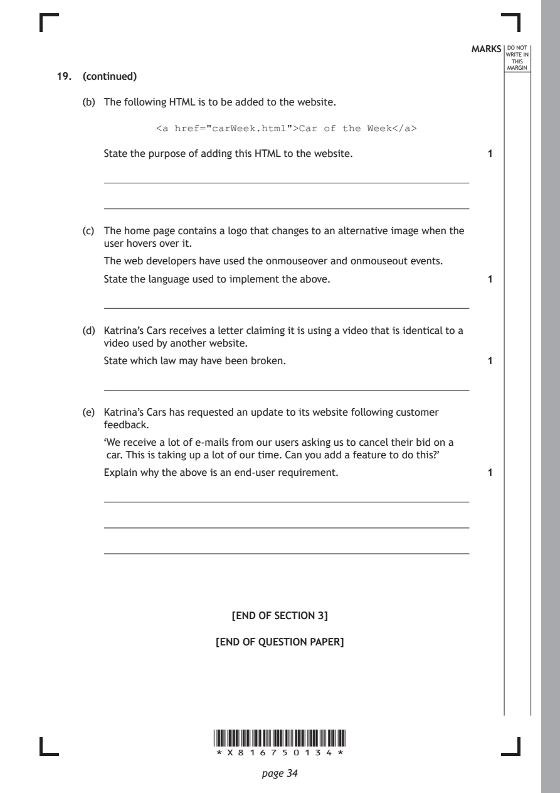
Selectable page text
MARKS DO NOT
WRITE IN
THIS
MARGIN
19. (continued)
(b) The following HTML is to be added to the website.
<a href="carWeek.html">Car of the Week</a>
State the purpose of adding this HTML to the website. 1
(c) The home page contains a logo that changes to an alternative image when the
user hovers over it.
The web developers have used the onmouseover and onmouseout events.
State the language used to implement the above. 1
(d) Katrina’s Cars receives a letter claiming it is using a video that is identical to a
video used by another website.
State which law may have been broken. 1
(e) Katrina’s Cars has requested an update to its website following customer
feedback.
‘ We receive a lot of e-mails from our users asking us to cancel their bid on a
car. This is taking up a lot of our time. Can you add a feature to do this?’
Explain why the above is an end-user requirement. 1
[END OF SECTION 3]
[END OF QUESTION PAPER]
*X816750134*
page 34PDF page 35
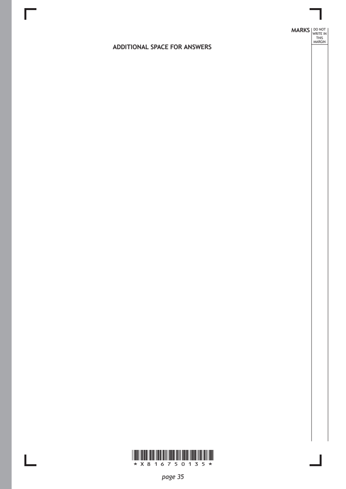
Selectable page text
MARKS DO NOT
WRITE IN
THIS
MARGIN
ADDITIONAL SPACE FOR ANSWERS
*X816750135*
page 35PDF page 36
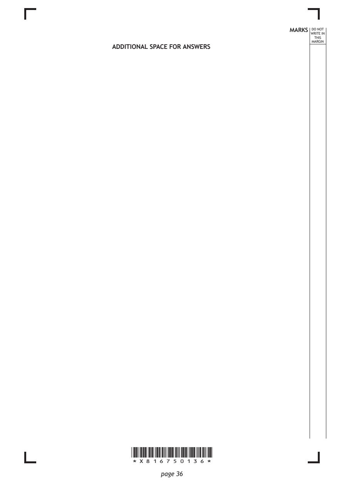
Selectable page text
MARKS DO NOT
WRITE IN
THIS
MARGIN
ADDITIONAL SPACE FOR ANSWERS
*X816750136*
page 36